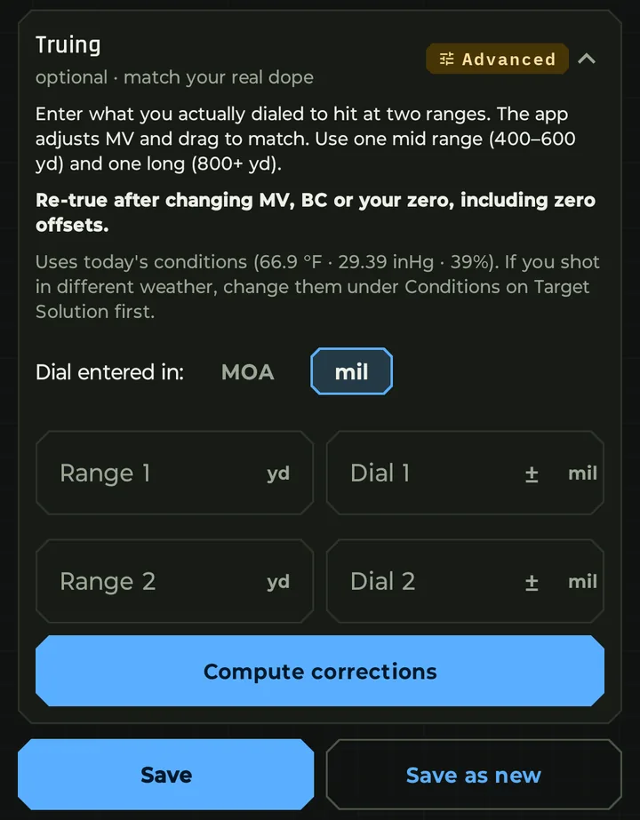
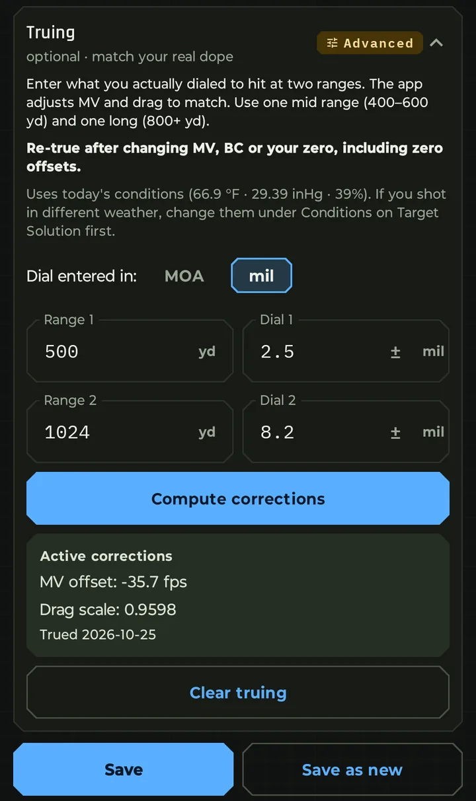

True when your real dope at long range doesn't match the solution, usually by a tenth of a mil or more. One good range day is enough.
How it works
- Shoot at a middle distance (400 to 600 yd) and a long one (800 yd or more). Note what you actually dialed to hit center.
- Open your load in Rifle Setup, go to Truing, and enter both distances and dials, in mil or MOA.
- Tap Compute corrections, then Save.
Bullseye solves two corrections together: a velocity offset and a drag scale. Two distances are needed because velocity and drag bend the curve in different ways. True from one distance and velocity has to absorb a BC error, so the hold is right at that distance and off at the others. With two, each correction takes the error it should.
Your bullet's published BC and your measured velocity stay saved as you entered them. Clear truing takes you straight back.


Before and after
An example: a 6GT with Berger 109 gr bullets, G7 BC 0.292 at 2,907 fps. The shooter needed 2.5 mil at 500 yd and 8.2 mil at 1,024 yd, a hair more than the app predicted at both. (The entries are made up to show the feature.)
Truing came back with velocity 35.7 fps lower and drag 4% lower. The holds from the app's trajectory table, before and after:
| Distance | Before truing | Trued |
|---|---|---|
| 500 yd | 2.45 mil | 2.50 mil |
| 1,000 yd | 7.83 mil | 7.87 mil |
| 1,500 yd | 16.92 mil | 16.74 mil |
| 2,000 yd | 31.93 mil | 31.29 mil |
What truing changed in the elevation hold
Trued hold minus the hold before truing. Berger 109 gr in a 6GT, trued at 500 and 1,024 yd
The two corrections pull in opposite directions. Lower velocity adds a little hold up close; lower drag takes hold away far out. Where you trued, they nearly cancel and only nudge the hold to match your dials. Past your farthest shot, the lower drag wins: 0.64 mil less at 2,000 yd, about 46 in.
Where the bullet slows past the speed of sound
From the trajectory preview, before truing and trued
Less drag keeps the bullet faster for longer. It now goes transonic at 1,187 yd instead of 1,162, and subsonic at 1,420 yd instead of 1,385.
Truing scales the drag curve
Drag coefficient by speed, before truing and trued (drag scale 0.960)
The drag scale moves the whole curve by the same 4%, keeping its shape. It fits best across the speeds your bullet flew between your two distances. If you shoot well past your long distance, true again farther out.
Tips for a good true
- Get the basics right first. Check your zero and chronograph your velocity. Truing fixes what's left, not a wrong zero.
- Use real dials. Enter what centered a group, not one lucky shot.
- Use the day's weather. Truing uses today's conditions. If you shot in different weather, change them under Conditions on Target Solution first.
- Spread the distances. One middle distance (400 to 600 yd) and one long (800 yd or more). The farther the long one, the better the true out there.
- Re-true after a change. A new velocity, BC or zero, including a zero offset, means a new true.